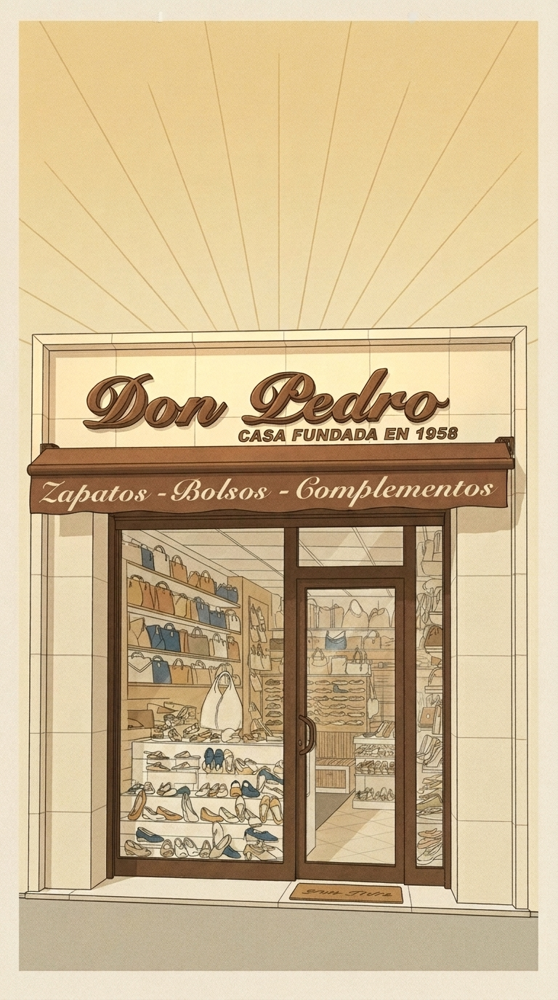

1 Edit the attached illustration, keeping EVERYTHING else identical (style, lines, colours, composition, sign text, awning text, shop window, door, sun rays): 1) remove the cream border/frame around the image so the illustration is full-bleed to all four edges (extend the golden sky with its sun rays to the top and side edges, extend the sidewalk to the bottom edge); 2) remove the small red fire extinguisher at the bottom right inside the shop window, replacing it with shelves of shoes like the rest of the window. Do not add anything else. No new text.

2 Edit the attached illustration, keeping EVERYTHING else identical (style, lines, colours, composition, sign text, awning text, shop window, door, sun rays): 1) remove the cream border/frame around the image so the illustration is full-bleed to all four edges (extend the golden sky with its sun rays to the top and side edges, extend the sidewalk to the bottom edge); 2) remove the small red fire extinguisher at the bottom right inside the shop window, replacing it with shelves of shoes like the rest of the window. Do not add anything else. No new text.